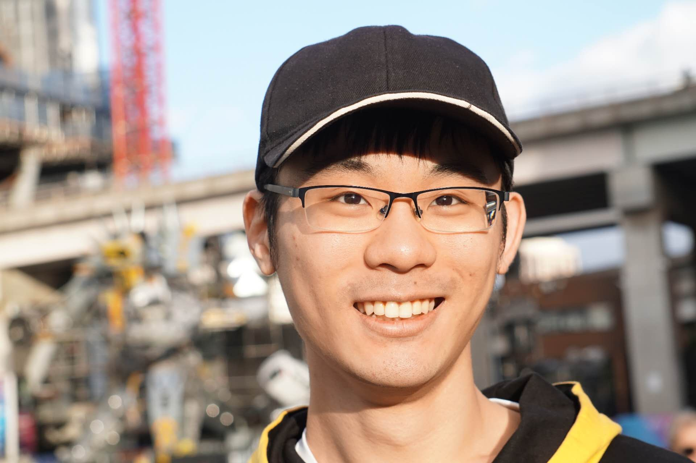

Home
|  |
Xikun Zhang
Lecturer (Assistant Professor) in Data Science and Artificial Intelligence
School of Computing Technologies
RMIT University
E-mail: xikun.zhang [at] rmit.edu.au
[Google Scholar]
|
Xikun Zhang’s research interests include:
- Graph machine learning
- AI for biology, with a particular focus on aging research
- Large language model (LLM) reasoning and LLM-based agents
- Foundation models
Short Bio
Xikun is a Lecturer (Assistant Professor) in Data Science and Artificial Intelligence, RMIT University. He received his BSc degree in Applied Physics from University of Science and Technology of China, M.Phil. and Ph.D. degree from The University of Sydney (USYD). After graduation, Xikun joined Nanyang Technological University (NTU), Singapore, in 2024 as a Wallenberg-NTU Presidential Postdoctoral Fellow. He then joined RMIT University in 2026 as a Lecturer. His work has been published in leading conferences including ICLR, NeurIPS, KDD, WWW, ICDM, CVPR, ECCV, and top journals like TPAMI and TNNLS.
|